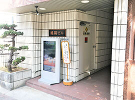
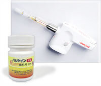

- TOP
- 医院情報・アクセス
安心して通える環境を整えています
JR京都線高槻駅より徒歩3分、阪急電鉄京都本線高槻市駅より徒歩5分の通いやすい環境にある歯医者「河原歯科クリニック」に初めてご来院の方へ、アクセスや医院紹介、院内設備や機器をご紹介します。プライバシーに配慮した院内環境とともに、歯科用CTやマイクロスコープなどの機器を導入して、高品質な治療のご提供を可能にしております。衛生管理も徹底しており、ご家族そろって安心してご来院いただける歯科医院です。歯科全般に対応いたしますので、お口まわりのお悩みは何でもお気軽にご相談ください。
医院情報
| 医院名 | 河原歯科クリニック |
|---|---|
| 院長 | 河原 敬 |
| 住所 | 〒569-0804 大阪府高槻市紺屋町7-27桃陽2F |
| 電話番号 | 072-682-8148 |
| 最寄り駅 | JR京都線（東海道本線） 高槻駅 南出口徒歩3分 阪急電鉄京都本線 高槻市駅 徒歩5分 |
| 診療時間 |
9:00～13:00／14:30～19:00 ドクターの勤務予定表はこちらをご覧ください。 |
| 休診日 | 土曜午後、日曜、祝日、第2・第4木曜 |
アクセス
お車でお越しの方へ
駅からお越しの方へ
-
①中央改札を出て右に進み、右手にある階段を降りてください。
-
②階段を降りると右手にグリーンプラザ2号館があります。そこの横断歩道を渡って右（南）にお進みください。
-
③30mほど歩くと、左手に当クリニックがあります。
-

④こちらからお入りください。
阪急電鉄京都本線
高槻市駅より
-
①改札を出て目の前の階段を降りてください。
-
②階段を下り、右に出たところにある横断歩道を渡って左にお進みください。">
②階段を下り、右に出たところにある横断歩道を渡って左にお進みください。
-
③30mほど歩くと商店街がありますので、その商店街をJR高槻駅方面へお進みください。
-
④商店街突き当りを右に進むと当クリニックが右手にあります。
-
⑤こちらからお入りください。
院内紹介
-
受付
広いカウンターのある明るい受付です。カウンターにはデンタルグッズをご用意しております。お求めの方はお声がけください。
-
待合室
患者様におくつろぎいただくため、待合室ではリラクゼーション効果のある映像やBGMを流しています。
-
カウンセリングルーム
お口の状態や治療についてお話をするスペースです。プライバシー保護のための個室ですので、ご不明な点などは何でもご相談ください。
-
院内LAN
治療説明用のアニメーションをはじめ、患者様のレントゲン写真や口腔内写真などを、カウンセリングルームや診療ユニットでご覧いただけるシステムを採用しております。
-
特別診療室
一般歯科治療だけでなく、専門的な審美歯科や重度の歯周病治療、インプラント治療などの外科処置に使用する診療室です。他の患者様の目を気にすることなく、治療に集中していただけます。
-
診療室
一般治療および歯科衛生士による治療や処置に使用する診療室です。不安なことやご質問などがあれば、いつでも遠慮なくおっしゃってください。
設備紹介
歯科用CT
歯科用CTの活用により、歯や顎の骨の状態、神経の位置などの目に見えない部分まで立体的に把握できます。この詳細情報は、根管治療やインプラント治療などの診査・診断に欠かせません。また、歯周外科治療においても神経や血管の位置などを含めた歯周組織の精密な診断や綿密な治療計画の立案を可能にします。従来のレントゲンに比べて被曝線量も抑えられるので、人体にやさしいという特長もあります。
歯科用CTを導入した理由
- 検査結果を診療室ですぐに確認できる
- 状態を詳細に把握できるので正確な診断に役立つ
- データを見ながらご説明するので、患者様の理解・納得につながりやすい
- 院内で撮影するので、手間や費用を抑えられる
マイクロスコープ
肉眼では見えない細かい部分を最大30倍に拡大できる拡大鏡です。細かい部位でも目視しながら治療できるので、「確実な処置」には不可欠な機器です。国内の歯科医院では普及率が低い歯科用CTとマイクロスコープの併用で、より確実な治療の実現につなげます。
マイクロスコープを導入した理由
- 拡大視野で確認ができるので、勘に頼らない確実な治療につながる
- 患者様もモニターで確認でき、納得のいく治療ができる
- 正確な診断や安全な治療・負担の少ない処置が可能
光学スキャナー：プライムスキャン
プライムスキャンとは、歯をスキャンするだけで歯型の情報を立体的に読み取ることができる機械です。従来のシリコンでの苦しい型採りと比べ患者様の負担が軽減され、より精密な型を取得できます。
プライムスキャンを導入した理由
- お口の中に光を当てるだけの負担の少ない印象ができる
- 型採りやその後の補綴物の製作が早くできる
- データとして残して置ける
- お口の状態を視覚的に見ることができ、患者様の理解につながる
-
デジタルレントゲン
デジタルレントゲンは通常のレントゲンに比べて、被曝線量が大幅に抑えられます。
-
口腔内カメラ
患者様の口腔内を撮影する歯科専門のカメラです。診療室のモニターでご確認いただけます。撮影画像は保存し、口腔内の健康維持に役立てます。
-
拡大鏡
肉眼では見えないような細かい部分も確認できる拡大鏡です。きちんと把握しながら治療できるので、より精密・正確な治療につながります。
-
生体モニター
外科処置を行う場合に使用する生体モニターです。心拍数など患者様の状態をくわしく把握しながら手術などを行うため、「万が一の事態」をいち早く察知できます。
-

電動麻酔器
一定速度で少しずつ麻酔液を注入できる電動注射器は、麻酔を注射する際の圧痛を軽減します。さらに、この注射の前に表面麻酔を塗布して、針を刺すときの歯ぐきの痛みもできるかぎり抑えます。
-
麻酔用カートリッジウォーマー
冷たい麻酔液を注射すると体温との温度差で「痛み」を感じやすいので、麻酔液を体温に近い温度（37℃）に温めて、温度差による痛みを和らげます。
-

血圧計
歯科治療での患者様の体調変化を把握するために、血圧、脈拍、経皮的酸素飽和度を5分ごとに測定します。数値が基準を超えたときにはアラームが鳴るので、治療中の異変に気づきやすく、その対処を早く行えます。
衛生管理を徹底しています
-

超音波洗浄器
感染症予防のために、治療器具は超音波洗浄器にかけています。器具の内部に入り込んだ血液や唾液、細かい粒子など、手洗いでは落としきれない汚れをしっかり洗浄したうえで、滅菌・消毒処理に進めます。
-
高温高圧滅菌器：オートクレーブ
高温高圧滅菌器（オートクレーブ）とは、治療器具を庫内に入れて高温高圧の状態にすることで、付着している細菌やウイルスを死滅させる機器です。高温高圧に耐えられる素材の器具は、基本的にこの装置で滅菌処理します。
-

ハンドピース用滅菌器：アイクレーブ
ハンドピース（タービンとエンジン）は歯を削るための切削機具です。虫歯治療に欠かせないハンドピースですが、筒状で特殊な形状をしているので、内部まで滅菌処理するために専用の滅菌器を使います。
-
ガス滅菌器：ホロホープ
高温に耐えられない素材の器具を、常温・常圧でスピーディーに滅菌処理するのがガス滅菌器（ホルマリン滅菌器）です。プラスチックや布など、高温高圧滅菌器にかけられないあらゆるものの滅菌処理が可能です。
-

口腔外バキューム
治療中に飛散しやすい水や唾液、血液、歯や金属を削ったときの細かい破片、発生するにおいなどをお口の近くで吸引する装置です。院内に設置された空気清浄機とともに、空気中のウイルスなども吸い込み、院内の衛生環境を保っています。
新型コロナウイルス感染症に対する感染対策について
現在、河原歯科クリニックは新型コロナウイルスの感染拡大を鑑み、院内感染防止のための対策を下記の通り行っております。
-
01
全来院患者様に体温測定をお願いしております。ご協力いただけない方の診療は感染予防のため、お断りする場合がございます。
-
37.5℃以上の患者様には予約の変更をお願いしております。また、咳が出るなど体調が少しでもよくない場合は受診を控えていただきますようお願い申しあげます。
-
02
ウイルスに対する効果が報告されていますので、診療開始前にイソジンまたはリステリンで「うがい」を行っていただきます。
-
ヨードアレルギー、妊娠・授乳中、甲状腺疾患をお持ちの方は必ずスタッフまでお申し出ください。
-
03
玄関、窓および各診療室は終日解放しております。
-
診療室のドアを閉めてほしいというご希望をお持ちの患者様は遠慮なくスタッフまでお申し出ください。また、窓も解放しておりますので、暖かい服装でご来院ください。
-
04
感染予防のため全従業員がマスクおよびフェースガードを着用したままで患者様の応対をさせていただいております。
-
さらに診療医・診療補助スタッフはガウン、帽子を着用したままの対応となりますのでご容赦ください。
-
05
院内感染予防のため、待合室、パウダールーム、レントゲン室、機器、診療室、診療チェアーの消毒および各医療機器の滅菌・消毒を徹底的に行っております。
-
場合により塩素の匂いや細かい水滴がついていることがございますが、ご理解ください。また、診療中の事故防止のため、お顔にタオルをおかけすることがありますが、患者様ごとに取り替えておりますのでご安心ください。
患者様へのお願い
- 発熱、咳、味覚異常、嗅覚異常、体調に不安のある方は必ず事前にご連絡ください。予約を変更させていただきます。
- 1ヶ月以内に海外への渡航歴のある方は予約を変更させていただいております。
- ご来院の際にはマスクを着用してお越しいただき、治療時以外、とくに待合室では必ず着用していただきますようお願いいたします。
- 来院時、ご帰宅前には手洗いのうえ、備えておりますアルコールで手指消毒を必ず行ってください。
以上、当クリニックは上記対策を継続したまま、通常診療を行います。
どうぞ安心してご来院いただければと思います。
よろしくお願いいたします。
河原歯科クリニック 河原 敬